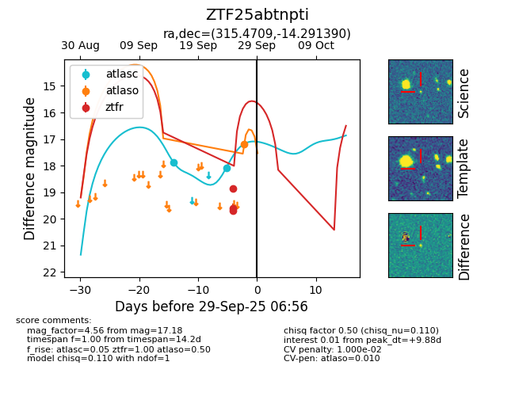
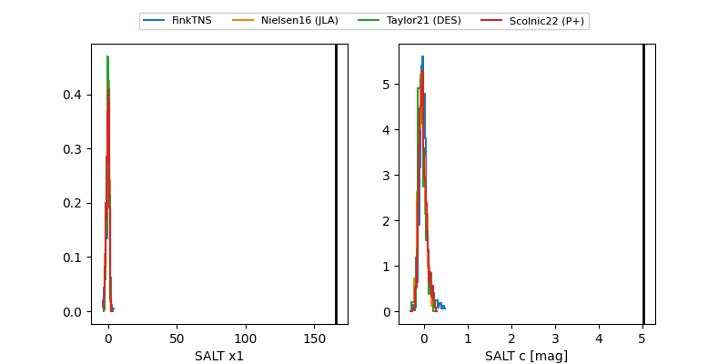

FINK: ZTF25abtnpti
Lasair: ZTF25abtnpti
ALeRCE: ZTF25abtnpti
ZTF25abtnpti (ztf,fink)
equatorial (ra, dec) = (315.4709,-14.29139)
galactic (l, b) = (34.2264,-35.26552)


last atlasc=18.07, atlaso=17.18, ztfr=18.86
2 atlasc, 1 atlaso, 3 ztfr detections